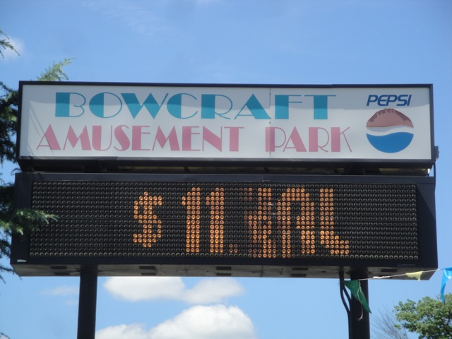
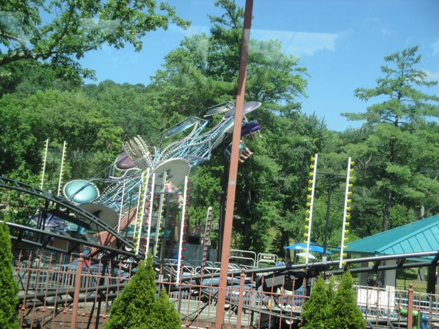

| |
 Bowcraft Playland Review
Bowcraft Playland Review

Bowcraft Playland wasn't anything more than your typical little credit whoring park. Now actually, there's a little bit of a history with me and this place...sort of. I originally wanted to go here in 2008 as a credit whoring stop the day before the North of the Border Trip since my hotel was within driving distance of the park and Crossbow looked like a fun little ride after looking at it on RCDB. However, those plans did not work out and it didn't happen. So when I was told that we were going to Bowcraft Playland on the Northeast Trip in 2011, a little piece of me was happy as I would be finally getting some random credits that I had hunted for 3 years ago. However, when I got to the park, it did not seem nearly as good as I expected. Now don't get me wrong. I knew that this was going to be a puny little place and nothing special, just meant for credit whoring. However, I was expecting something more along the lines of Scandia, a similar sized park I visited just a month earlier on the other side of the country in California (and is also now closed). However, something about Bowcraft just seemed...I don't know...kind of unclean. I mean, it wasn't filthy or anything. There was just this vibe that didn't exactly make me comfortable. And hey. I guess I wasn't the only one who thought that way since...the park is now gone.
Rollercoasters
There is a link to a review of all the Rollercoasters at Bowcraft Playland.
Top Coasters
Crossbow Review

Kiddy Coasters
Dragon Review

Flat Rides
I did not ride any flat rides at Bowcraft Playland. But there were no special flat rides to be found at Bowcraft Playland. I mean, let's take a look at their selection. They had a pirate ship, a paratrooper, a music express, a tilt a whirl, a scrambler, a carousel, and some various other kiddy flat rides. None of that stuff is missed. =)

Proof that this park did indeed, have flat rides.
Water Rides
While Bowcraft Playland may have had flat rides, they did not however, have any water rides.
Dining
I did not eat at Bowcraft Playland.
Theming and Other Attractions
The theming at Bowcraft Playland was outright laughable. Now I'm sure none of you were expecting anything of Disneyland quality. I mean, this was a small local park after all. And it may not have been Disney Quality, but you may certainly have seen some Disney characters. Yeah. This place had all sorts of copyrighted characters from Disney, Warner Bros., and Hannah Barbara. How lovely. And as for other stuff to do...I can't think of jack sh*t. There was probably some arcade games, but that's really all I can think of.
In Conclusion
Bowcraft Playland was a locals park and you're deluding yourself if you think otherwise. I will admit it wasn't a bad place for credit whoring. I mean, Crossbow was a really fun coaster that exceeded my expectations. It was one of the few credit whoring coasters you could ride without feeling any shame. And luckily, it found a new home. However, there was no re-visitability value to this place. Crossbow may have been fun, but it wasn't not a coaster to ride once you have the credit, and there sure wasn't any other stuff to do. So yeah, it was just a grab and go kind of place, which was a little dissapointing. But hey. No loss now that the park has closed forever.
Enthusiast FAQs.
*Are there kiddy coaster restrictions? - No. There were no restrictions for Dragon.

Tips
*Get your credits quickly.
*Crossbow is actually a fun ride.
*Have Fun!!!!
Theme Park Category:
Credit Whoring Stop
Location
Scotch Plains, New Jersey, USA
Last Day Visited
July 27, 2011
Video
There will NEVER be a Bowcraft Playland video.
Complete Update List
2011
TPR's Northeast Trip
Here's a link to the parks website.
Home
|